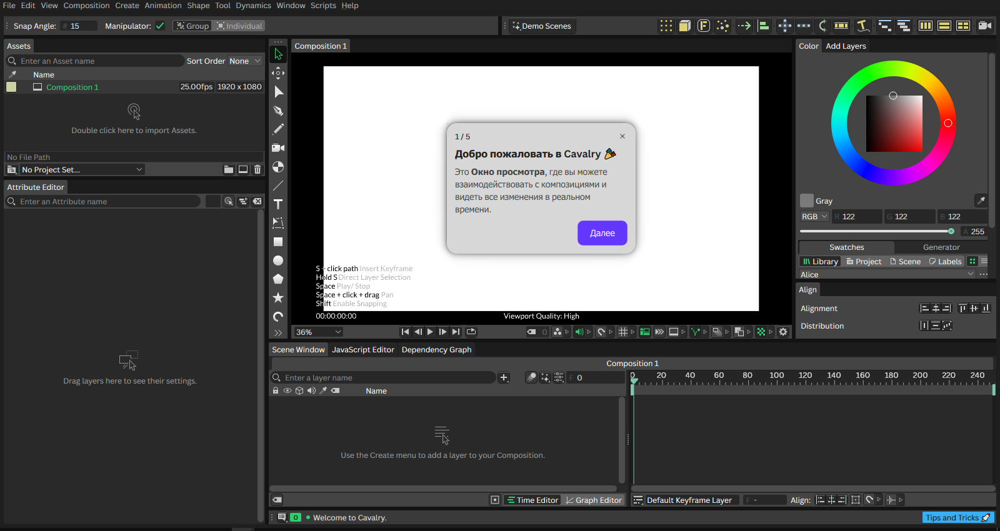
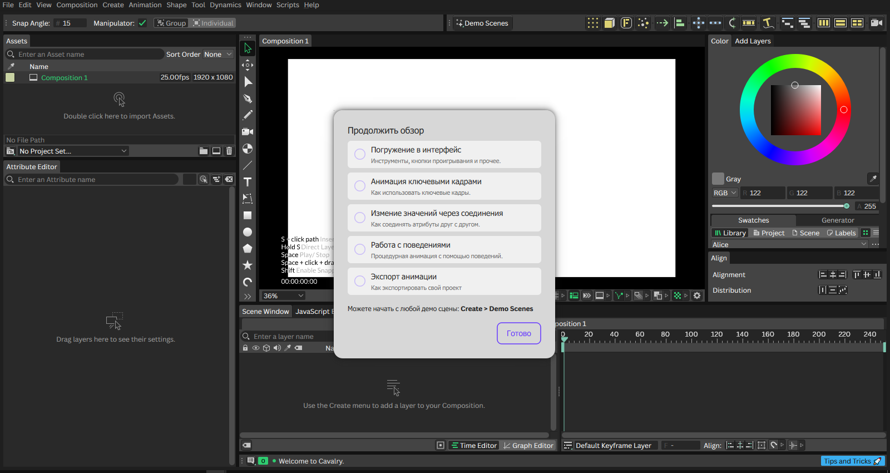
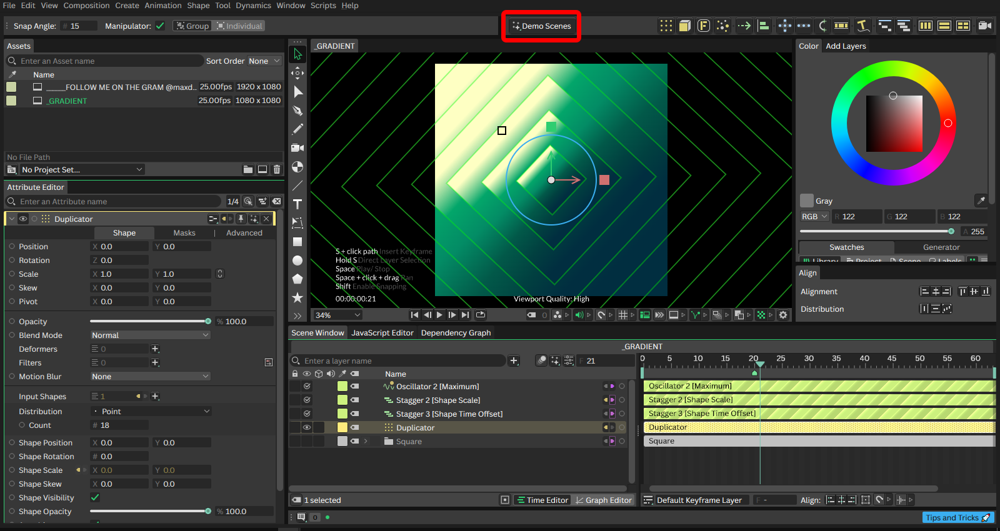

Быстрый старт
Пошаговый гайд
При первом запуске программы, активируется встроенная "обучалка", которая проведёт вас по основным областям интерфейса и позволит бегло определиться с основными элементами. Если вы используете ВК версию Cavalry, то всё будет на русском:

После первых пяти шагов, вы сможете пройти дальнейшее обучение:

Демо-сцены
Когда вы окончите краткое, пошаговое обучение, можно приступить к разбору различных демо-сцен, из которых вы узнаете о продвинутых возможностях программы. Эти сцены доступны всегда и быстрого меню на полке:
